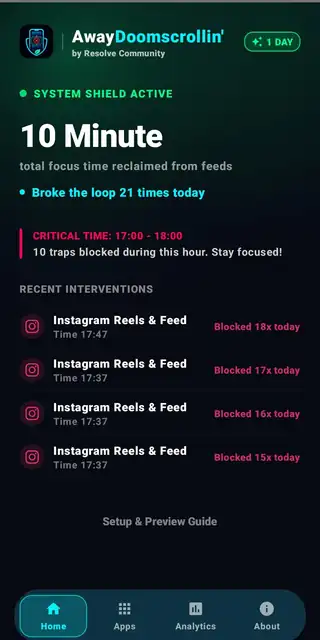
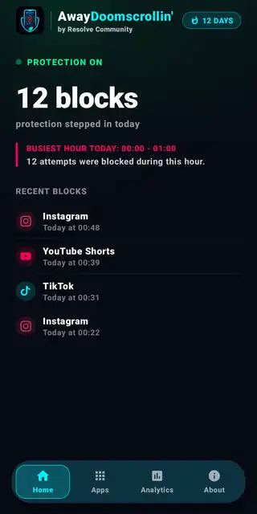

AwayDoomscrollin'
إنتاجية ومهام
Break the scrolling loop without losing touch. AwayDoomscrollin' is an open-source Android app from Resolve Community. It covers the feeds and stops short-video scrolling on Instagram, TikTok and YouTube, while messages, search and the things you choose to watch stay available. It does not set time
✓ ترخيص مفتوح (GPL-3.0-only) · آخر تحديث: 2026-11-23
1.5.0الإصدار
3.4 MBالحجم
GPL-3.0-onlyالرخصة
Open in Kanzتحميل APK (3.4 MB)
Download APK
SHA-256: 75ff47e23f552b72d0123c758c175781af2824b8d1396c9907836a2da3ca2bd9


امسح الكود لفتح صفحة التطبيق
Scan to open this app page
لو كنز مش متثبت عندك: نزّل متجر كنز.
Not installed? Get the Kanz store.